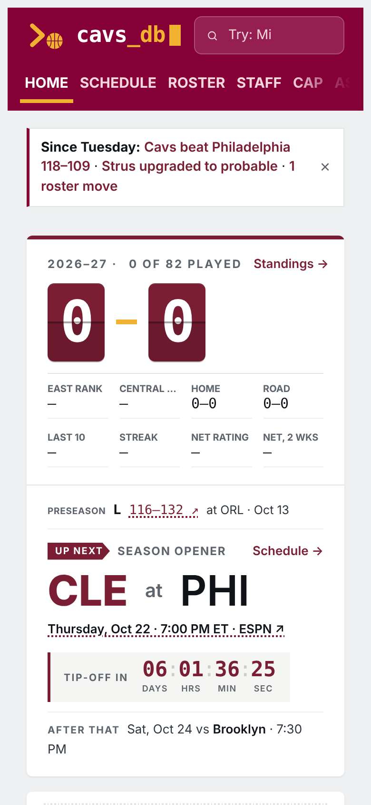
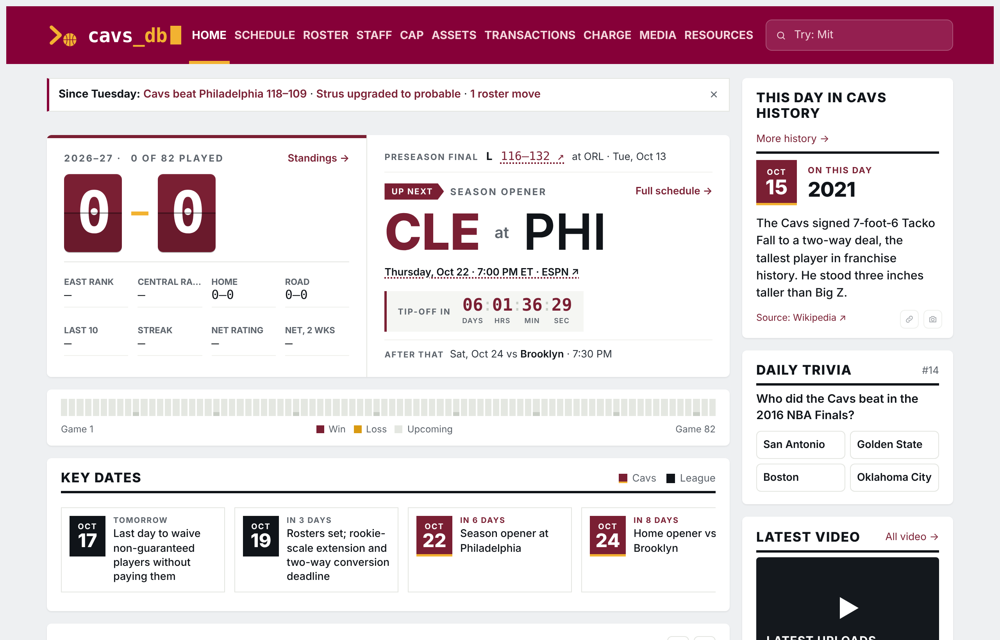
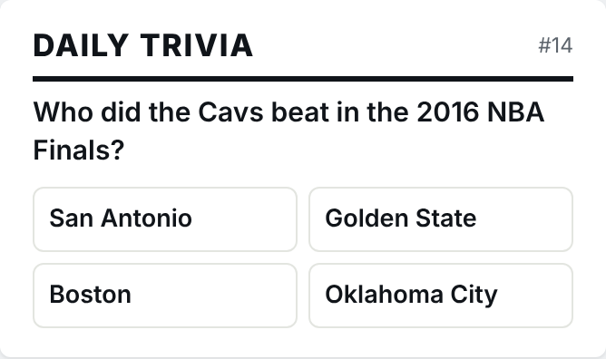
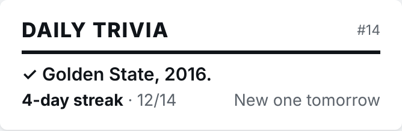
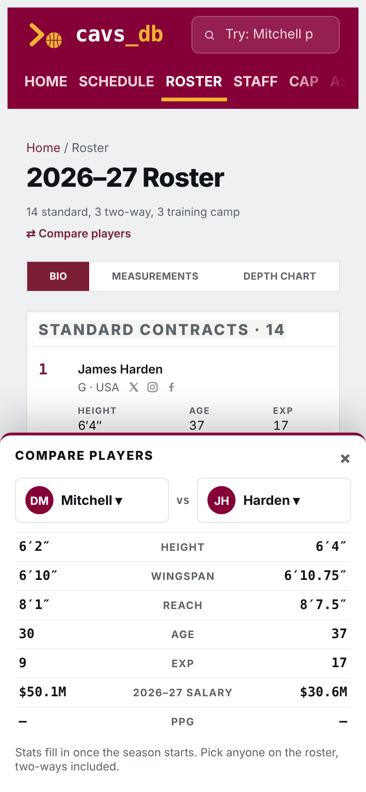
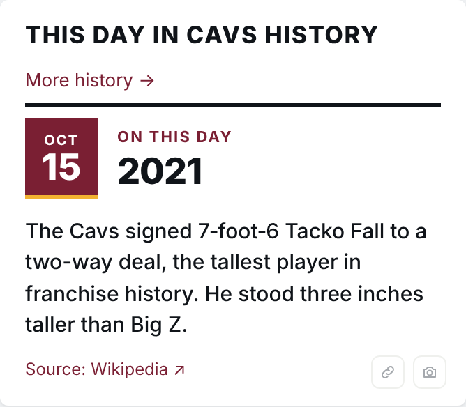
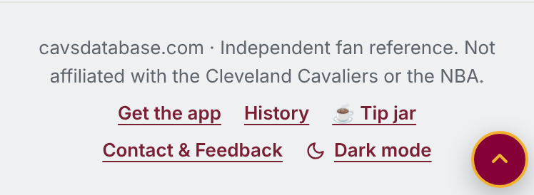

Mockups built on the live site. Nothing here is live yet.
A slim strip at the top of Home. Only shows if you've been away 12+ hours and something changed. Each item links to the spot. Tap × and it's gone until the next change. No popups.


A small card in the Home right rail, under "This day in Cavs history" (on phones it sits right after that card). One question a day, tap an answer. After you answer, it shrinks to a one-line streak. No notifications, no popups, nothing on other pages.


A "⇄ Compare players" link on the Roster page (same quiet link style as "Add to calendar"). It opens a sheet from the bottom: pick any two players, see them side by side. Later it could also live on player pages if those go live.

My pick: its own /history page (season by season records, playoff runs, the title team, all-time leaders, every "this day" entry), not in the main menu. Two ways in: "More history →" on the This Day card, and a "History" link in the footer.


The site is now installable (done, behind the scenes). The only visible piece I'd add is the small "Get the app" footer link above, which opens two lines of instructions: iPhone: Share → Add to Home Screen. Android: menu → Install app.